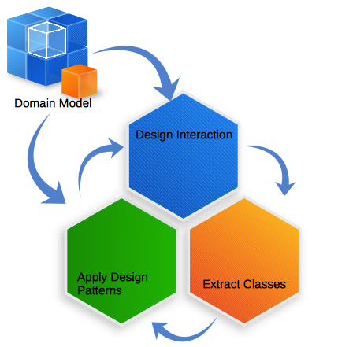
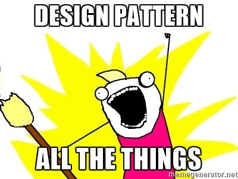

Design Patterns
Table of Contents
1 About This Sprint
This sprint extends upon the previous sprints on constructing a good design with the help of previously tried and tested solutions, so called Design Patterns.
2 User Stories covered in this Sprint
- As a software designer I want to create a design that adheres to basic design principles so that I am sure that it will “hold” when I add more functionality and start maintaining the system.
- As a software desginer I want to be able to use previously tested solutions where applicable so that I do not have to reinvent the wheel for every problem.
3 Introduction
Object Oriented software design has been around for some time now. Over the years, certain problem types have appeared again and again, and over time common solutions to these problems evolved under the name Design Patterns. A design pattern is a tried and tested solution for a recurring design problem, that assigns roles and responsibilities to each class in a group of collaborating classes.
A currently common philosophy for software construction is “Get the functionality right first, design support for your quality requirements later”. While I am not sure I fully agree with this, this is the mentality that e.g. test-driven development leads to (even if it may not be explicitly said). Jan Bosch suggests something similar when it comes to software architecture design. I think this is a useful philosophy, but only to a certain extent. I think that unless you have created your design with some awareness of the quality requirements you have, and with some awareness and control over how to create a design that can meet these requirements, the necessary refactoring is going to be very difficult if not impossible. This is why it is important to be aware of common design principles and design patterns.
You have already studied the first building block to achieve good designs with the GRASP patterns from C. Larman, Applying UML and Patterns, 3rd Edition. These basic design principles do not target any specific quality attribute or any specific problem or problem type, but are generic principles in order to set a good foundation for your design. The next building block is to look at groups of interacting classes, and good design principles for getting these groups of classes to work together to solve specific problems. The last building block is the software architecture, which is discussed in other sprints.
The design patterns discussed in C. Larman, Applying UML and Patterns, 3rd Edition is a subset of the ones in the so-called “Gang of Four"-book 1 (Listed in Table 1). These are a good starting point. I warmly recommend you to buy the GoF book as well and glance through the patterns so you have a rough idea of all the patterns in this book. This will help you to quickly recognise when you can solve a problem with a particular design pattern.
| Pattern | Brief Problem Description |
|---|---|
| Adapter | You want to use one interface, but your code provides another, or another version. |
| Factory | You need a transparent way to create objects of the right type. |
| Singleton | You have a resource that is shared across your entire application and which must be kept unique, but can not/do not want/your software design teacher has told you not to/ use a global variable |
| (Note, a global variable would not solve the “unique access” problem anyway) | |
| Strategy | You need a way to (possibly at runtime) change an algorithm depending on some circumstances. |
| Composite | In your system, the same strategies should be applied to individual entities as to some, defined, groupings of entities. |
| Facade | You have different implementations or interfaces that you wish to hide from the users of your API. |
| Observer | You want to be able to add new parts to your system that should be notified of changes in another part, without having to go in there and hard-code the notification all the time. |
| Proxy | You do not want to directly access a resource, for a number of reasons. |
| Abstract Factory | Your homegrown Factory pattern just blew up in your face and you need a more scalable solution. |
The thing with design patterns, which I cannot stress enough, is that they are proven solutions to common problems. It’s not just “I googled for this problem, and a random dude at StackOverflow got lots of votes for this solution, so I am going to cargo-cult it into my own application without understanding the consequences of solving my problem in this way”. Each solution has known consequences in terms of the effect on a number of quality attributes (modifiability in particular).
Moreover, once you decide to solve your problem using a particular design pattern, you can annotate your design to say that you are indeed using Design Pattern X. You may even use UML Stereotypes to annotate your individual classes in your design with both the pattern name as well as each class’ role in the pattern. The benefit of this is that other software developers will recognise what pattern you are using, will understand the roles and responsibilities, and will know how to extend or modify it. Even if you do not explicitly annotate your design the role-names tend to become embedded into the class names such that a good designer will recognise the design patterns anyway.
TL;DR: Design Patterns help you re-use proven solutions to commonly recurring problems. It also helps you and other developers to understand the design.
I would also like to point out that you normally do not use design patterns in isolation. Rather, you nest usage of design patterns inside each other, and you typically even use some design patterns to construct others (the Observer pattern is notoriously used as a building block of other patterns, as is the Facade and Proxy patterns depending on how you look at things). There are also some patterns which are very similar in nature (for example, the Strategy pattern and the State pattern).
3.1 When to apply Design Patterns
The next question is when should you start thinking of design patterns? I have partially answered this by saying that you should always be aware of common design patterns so that they become a natural way to think of roles and responsibilities when designing.
The next point is when you are creating your UML interaction diagrams, and are deciding how a certain interaction should “play out”. The problem is that it is rather difficult to recognise design patterns here, so I would suggest that you back up a bit first. Go back to your UML Domain Model. Reflect upon the feature you are currently trying to design, and which concepts from your domain model might be involved.
- Are there any shared resources (might Singleton be a good idea)?
- Do you need to shelter yourself e.g. from an external party or resource (can you hide this behind an Adapter or a Proxy)?
- Can you structure the data hierarchically (Would Composite help)?
- Do you need to create new objects according to some business rule (can you encode this in a Factory or an Abstract Factory)?
This will at least put the embryos for design patterns in place. However, this will probably also require you to think slightly further than just the UML interaction diagram you are currently designing, or the UML use case you are currently working on, or even the current sprint. Most design patterns are solutions to how to seamlessly add new or alternative functionality, and when you are designing one particular use case or interaction diagram you should first be focusing on creating one functional flow without any concern for alternative flows (Yes, they are there in the UML use case description, and you should take care of them in your interaction diagrams too, but the workflow is to “do the main flow first, then do the alternative flows”), so you may not see the need for a design pattern when you are designing for the first iteration.
The benefit of at least spending some thought about design patterns early on is that it will make your life easier later, because you already have the scaffolding in place to extend with more functionality.
The danger is that you add structure that may not be required. It certainly is not required for your current iteration. In the eyes of Lean software development, this is a waste, and just helps to create a technical debt. You have added structure that needs to be maintained, and needs to be understood before any maintenance is done, but which is not used to deliver any actual value to your customers.
So a better approach is to plunge on instead of backing up. Do your interaction diagrams. Extract a minimum viable class diagram therefrom, and only then think about what commonalities and variations you have between different interaction diagrams and how you may resolve these commonalities and variations with the help of design patterns.
Then you go back and revise your interaction diagrams accordingly. Remember that at this stage refactoring is cheap since you only have “paper products” to work with.

Figure 1: Designing the dynamic behaviour together with the static behaviour and applying design patterns is an iterative process.
3.2 A Word of Warning
I would like to end this section with a word of warning: It is easy to go overboard with design patterns.

Some colleagues of mine once took a small system that consisted of a handful of classes and started refactoring with the help of design patterns. They stopped when they had 30-odd classes, and I am not sure that any of the qualities they had started out optimising for could be detected in the system anymore (I don’t think this was a major concern for them, though, since the primary goal of the exercise was to see how many classes you would get if you kept on adding design patterns).
First of all, many design patterns solve similar problems so if you have one design pattern in place, chances are that you have at least partially addressed many of the concerns you had.
Second, you will not resolve any underlying problems just by throwing more design patterns at your system. If the system is broken, more design patterns will not help.
Third, this is why you should start out lean. Only address your immediate concerns. Refactor later if you still have unsolved issues.
However, in order to decide which design patterns are minimally necessary, you need to know about many design patterns so you can make an informed decision between them.
4 Learning Material
4.1 Book Chapters
- C. Larman, Applying UML and Patterns, 3rd Edition, Chapters:
- Applying GoF Design Patterns
- More Object Design with GoF Patterns
- Designing a Persistence Framework with Patterns
4.2 Screencasts
4.3 Further Reading
- Execution in the Kingdom of Nouns (Steve Yegge)
- Program to an Interface, not an Implementation: Define role-based interfaces and use these instead of “direct links” to the instantiated class. NOTE: Also read the “Wizards and Warriors” rant for a counter-argument.
- Wizards and Warriors Part I Part II Part III Part IV Part V: Introduces the need for an Entity Component System (ECS), which is a common game design pattern since the normal inheritance practices break down.
- Favour Object Composition over Class Inheritance: The same pattern, with a different name.
5 Experiential Learning
5.1 Sprint Test Plan
Go through the user stories for this sprint and make sure you have a clear understanding of how to solve each of them.
Revisit and update your risks and contingencies section.
Add and/or revise the following items to your glossary:
- Design Pattern
- Adapter
- Factory
- Singleton
- Strategy
- State
- Composite
- Facade
- Observer
- Proxy
- Abstract Factory
- Stereotypes
- Interface, and Abstract Class
Make sure you understand what each item is, the notation for them, and how to use them either in isolation or together with the other concepts.
5.2 Assignment: Identify Design Patterns
Revisit the material you have produced until now and identify if you may use any design patterns.
Tasks:
- Go through your UML Use Cases, your UML Interaction Diagrams, and your UML Class Diagrams.
- Identify where there are challenges such as (but not limited to) shared resources, external interfaces, or context dependent strategies.
- For each challenge:
- Identify a suitable design pattern.
- Identify the involved classes in your current solution
- Identify which roles they would have according to the design pattern.
- Briefly describe:
- What was your challenge?
- Which design pattern(s) may address it? Why?
- Which classes are involved? What are their roles?
- What did you gain by applying this design pattern?
- What did you lose by applying this design pattern?
- IMPORTANT: Refactor your class diagrams and your interaction diagrams to use the design pattern. Rename classes or use stereotypes so that the applied design patterns become clear in your design.
- Review your new design according to the GRASP patterns to make sure you still have a good object-oriented design. Refactor otherwise.
- Iterate 1-2 times to make sure you have covered
Document Structure:
The title for this Assignment Document is: Applying Design Patterns for System <system name> .
The assignment document shall contain the following items:
- Title Page
- Title: <assignment document title>
- Sub-title: “Assignment in the course <course code><course name>”
- Date
- Authors and Author Contribution
Add a table with all authors, their social security numbers, and the share in percent that the author has contributed in thinking (discussing, reasoning, etc.) and in actually writing the submitted assignment document.
Author Name Social Security Number Thinking Writing
- System Description
A brief description (2-3 paragraphs) of your interpretation of what the goal of the system is.
- Challenges
Briefly describe your challenges according to the task description above:
- What was your challenge? How (and in wich diagrams) was it identified?
- Which design pattern(s) may address it? Why?
- Which classes are involved? What are their roles?
- What did you gain by applying this design pattern?
- What did you lose by applying this design pattern?
- Refactorings
- A partial class diagram with your refactored classes
- Relevant Interaction diagrams refactored to use the new class diagram.
Commit and push this document to your project repository.
Conditions of Satisfaction:
When marking this part of the assignment we are looking for the following:
- Does the title page contain a table with authors and author contribution?
- Size of assignment: Are there between 3 and 10 challenges that are solved with design patterns?
- Consistency: Are the associated diagrams (UML Class Diagrams, UML Interaction Diagrams) updated to reflect the application of the design patterns?
- Are the most obvious challenges where design patterns may be applied identified?
- For each challenge: Is the challenge well described?
- For each challenge: Is the most suitable design pattern selected? Does the motivation make sense?
- For each challenge: Is the design pattern properly applied?
- For each challenge: Are the benefits and liabilities well explored?
5.3 Update Course Backlog
As the system grows, is there a way to structure the bigger building blocks of a system? Package diagrams show how the implementation artefacts are structured, but how would you express the dynamic behaviour on a package level? What about exploring high-level concepts of a large software system? Are there patterns similar to design patterns that deal with systems and sub-systems?
Are there any other questions that you want answered? Add them, along with a brief strategy for how to find an answer.
6 Sprint Acceptance Tests
You are done with this sprint when:
- You have reviewed the Design Patterns in C. Larman, Applying UML and Patterns, 3rd Edition and have a general understanding of which problems they try to solve, and how to structure a solution in accordance with each design pattern.
- You have considered your current design and identified design patterns that may be useful to you.
- You have refactored your current design to make use of the identified design patterns.
- You have reviewed your design to make sure all diagrams are fully consistent with each other after your refactoring.
- You have created an “Applying Design Patterns” document.
- You have committed/pushed this document to your project repository.
you may also have
- Updated your Sprint Test Plan
- Updated your Course Backlog
Footnotes:
E. Gamma, R. Helm, R. Johnson, and J. Vlissides. Design Patterns: Elements of Reusable Object-Oriented Languages and Systems. Addison-Wesley, Reading MA, 1994.